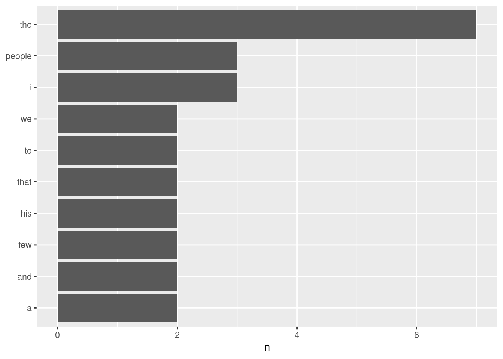
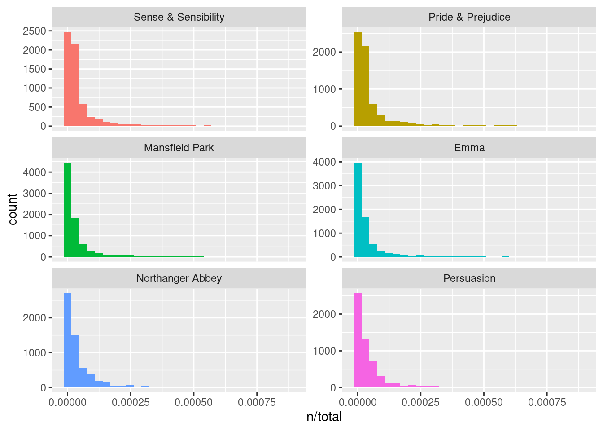
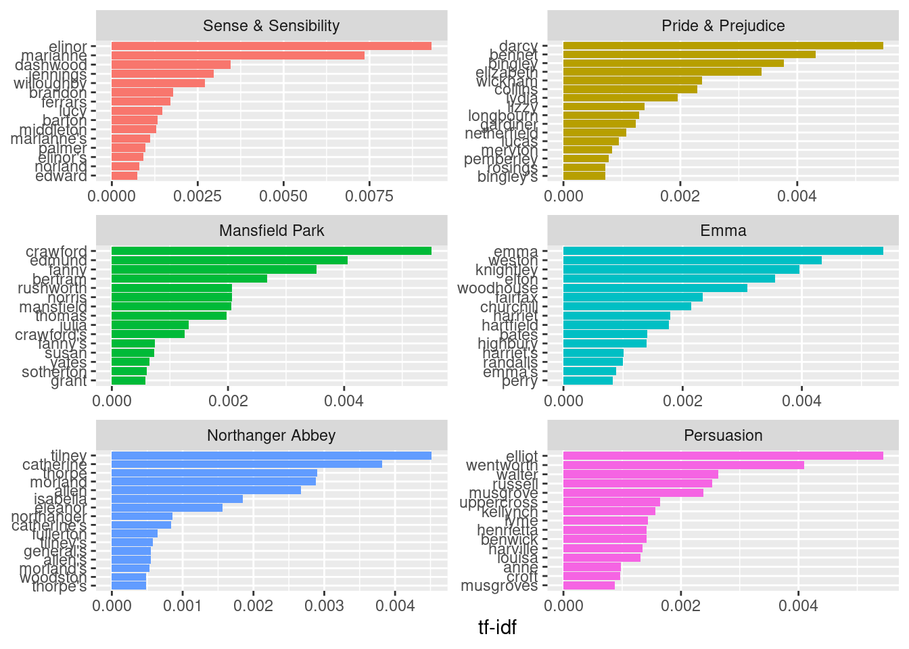

string1 <- "camp"
string1[1] "camp"string2 <- "I love methods camps."
string2[1] "I love methods camps."In R, a piece of text is represented as a sequence of characters (letters, numbers, and symbols).
A string is a sequence of characters, which is used for storing text.
Creating strings is very straightforward in RStudio. We assign character values to a variable, being sure to enclose the character values (the text) in double or single quotation marks.
string1 <- "camp"
string1[1] "camp"string2 <- "I love methods camps."
string2[1] "I love methods camps."string3 <- c("I", "love", "methods", "camp", ".")
string3[1] "I" "love" "methods" "camp" "." Often, strings, and more broadly text, contain information that we want to extract for the purpose of our research.
For tasks such as these, we can use regular expressions (also known as ‘regex’), which search for one or more specified pattern of characters.
test <- "test"Fortunately, the syntax for regular expressions is relatively stable across all programming languages (e.g., Java, Python, R).
library(stringr)stringr comes with the tidyverse and provides functions for both (a) basic string manipulations and (b) regular expression operations. Some basic functions are listed below:| Function | Description |
|---|---|
str_c() |
string concatenation |
str_length() |
number of characters |
str_sub() |
extracts substrings |
str_dup() |
duplicates characters |
str_trim() |
removes leading and trailing whitespace |
str_pad() |
pads a string |
str_wrap() |
wraps a string paragraph |
str_trim() |
trims a string |
stringr:my_string <- "I know people who have seen the Barbie movie 2, 3, even 4 times!"
my_string[1] "I know people who have seen the Barbie movie 2, 3, even 4 times!"lower_string <- tolower(my_string)
lower_string[1] "i know people who have seen the barbie movie 2, 3, even 4 times!"str_c command:my_string2 <- "I wonder if they have seen Oppenheimer, too."
cat_string <- str_c(my_string, my_string2, sep = " ")
cat_string[1] "I know people who have seen the Barbie movie 2, 3, even 4 times! I wonder if they have seen Oppenheimer, too."We can also split up strings on a particular character sequence.
my_string_vector <- str_split(cat_string, "!")[[1]]
my_string_vector[1] "I know people who have seen the Barbie movie 2, 3, even 4 times"
[2] " I wonder if they have seen Oppenheimer, too." We can also find which strings in a vector contain a particular character or sequence of characters.
grep (Globally search for Regular Expression and Print) command will return any instance that (partially) matches the provided pattern.grep() function is the grepl() function, which returns a logical for whether a string contains a character or sequence of characters.grep("Barbie",
cat_string,
value = FALSE,
ignore.case = TRUE)[1] 1# To search for some special characters (e.g., "!"), you need to "escape" it
grep("\\!", cat_string, value = TRUE)[1] "I know people who have seen the Barbie movie 2, 3, even 4 times! I wonder if they have seen Oppenheimer, too."grepl("\\!", cat_string)[1] TRUEstr_replace_all function can be used to replace all instances of a given string, with an alternative string.str_replace_all(cat_string, "e","_")[1] "I know p_opl_ who hav_ s__n th_ Barbi_ movi_ 2, 3, _v_n 4 tim_s! I wond_r if th_y hav_ s__n Opp_nh_im_r, too."We can also pull out all sub-strings matching a given string argument.
str_extract_all(cat_string, "have")[[1]]
[1] "have" "have"str_extract_all(cat_string,"[0-9]+")[[1]] [1] "2" "3" "4"# The square brackets define a set of possibilities.
# The "0-9" says the possibilities are any digit from 0 to 9.
# The "+" means "one or more of the just-named thing"
str_extract_all(cat_string,"\\d+")[[1]] # Instead of 0-9, we can just say "\\d" for digits[1] "2" "3" "4"str_extract_all(cat_string,"[a-zA-Z]+")[[1]] # letters [1] "I" "know" "people" "who" "have"
[6] "seen" "the" "Barbie" "movie" "even"
[11] "times" "I" "wonder" "if" "they"
[16] "have" "seen" "Oppenheimer" "too" str_extract_all(cat_string,"\\w+")[[1]] # "word" characters [1] "I" "know" "people" "who" "have"
[6] "seen" "the" "Barbie" "movie" "2"
[11] "3" "even" "4" "times" "I"
[16] "wonder" "if" "they" "have" "seen"
[21] "Oppenheimer" "too" We can use the tidytext package to conduct some basic text analysis using tidy data principles.
As Wickham 2014 reminds us, tidy data has a specific structure:
We can thus define the format as a table with one-token-per-row.
As Silge and Robinson (2017) remind us, it is important to contrast this structure with the alternative ways that text is often structured and stored in text analysis:
Let’s try an example. To create a tidy text dataset, we need to first put some text into a data frame.
library(dplyr)
Barbie <- c("I'm a Barbie girl in the Barbie world",
"Life in plastic, it's fantastic",
"You can brush my hair, undress me everywhere",
"Imagination, life is your creation")
Barbie[1] "I'm a Barbie girl in the Barbie world"
[2] "Life in plastic, it's fantastic"
[3] "You can brush my hair, undress me everywhere"
[4] "Imagination, life is your creation" Barbie_df <- tibble(line = 1:4, text = Barbie)
Barbie_df# A tibble: 4 × 2
line text
<int> <chr>
1 1 I'm a Barbie girl in the Barbie world
2 2 Life in plastic, it's fantastic
3 3 You can brush my hair, undress me everywhere
4 4 Imagination, life is your creation We then break the text into individual tokens (tokenization) using tidytext’s unnest_tokens() function.
unnest_tokens() function are column names. We have the output column, word, created by unnesting the text, and we have the input column, text, where the text being unnested comes from.install.packages("tidytext")library(tidytext)
Barbie_df %>%
unnest_tokens(word, text)# A tibble: 26 × 2
line word
<int> <chr>
1 1 i'm
2 1 a
3 1 barbie
4 1 girl
5 1 in
6 1 the
7 1 barbie
8 1 world
9 2 life
10 2 in
# ℹ 16 more rowsOnce we have our tidy structure, we can then perform very simple tasks such as finding the most common words in our text as a whole. Let’s instead work with a short passage from a famous interview with J. Robert Oppenheimer.
count() function from the dplyr package with ease here.Oppenheimer <- c("We knew the world would not be the same.",
"A few people laughed, a few people cried, most people were silent.",
"I remembered the line from the Hindu scripture, the Bhagavad-Gita.",
"Vishnu is trying to persuade the Prince that he should do his duty and to impress him
takes on his multi-armed form and says, “Now, I am become Death, the destroyer of
worlds.”",
"I suppose we all thought that one way or another.")
Opp_df <- tibble(line = 1:5, text = Oppenheimer)
Opp_tok <- unnest_tokens(Opp_df, word, text)
Opp_tok %>%
count(word, sort = TRUE)# A tibble: 59 × 2
word n
<chr> <int>
1 the 7
2 i 3
3 people 3
4 a 2
5 and 2
6 few 2
7 his 2
8 that 2
9 to 2
10 we 2
# ℹ 49 more rowsggplot2 package and create a simple visualization of the most common words in the short excerpt.library(ggplot2)
Opp_tok %>%
count(word, sort = TRUE) %>%
filter(n > 1) %>%
mutate(word = reorder(word, n)) %>%
ggplot(aes(n, word)) +
geom_col() +
labs(y = NULL)
Another way to quantify what a document is about is to calculate a term’s inverse document frequency (idf), which decreases the weight for commonly used words and increases the weight for words that are not used as frequently in a corpus.
If we multiply together the term frequency (tf) with the idf, we can calculate the tf-idf, the frequency of a term adjusted for how infrequently it is used.
We are going to take a look at the published novels of Jane Austen, an example from Silge and Robinson (2017).
library(janeaustenr)
book_words <- austen_books() %>%
unnest_tokens(word, text) %>%
count(book, word, sort = TRUE)
total_words <- book_words %>%
group_by(book) %>%
summarize(total = sum(n))
book_words <- left_join(book_words, total_words)
book_words# A tibble: 40,379 × 4
book word n total
<fct> <chr> <int> <int>
1 Mansfield Park the 6206 160460
2 Mansfield Park to 5475 160460
3 Mansfield Park and 5438 160460
4 Emma to 5239 160996
5 Emma the 5201 160996
6 Emma and 4896 160996
7 Mansfield Park of 4778 160460
8 Pride & Prejudice the 4331 122204
9 Emma of 4291 160996
10 Pride & Prejudice to 4162 122204
# ℹ 40,369 more rowsggplot(book_words, aes(n/total, fill = book)) +
geom_histogram(show.legend = FALSE) +
xlim(NA, 0.0009) +
facet_wrap(~book, ncol = 2, scales = "free_y")`stat_bin()` using `bins = 30`. Pick better value with `binwidth`.Warning: Removed 896 rows containing non-finite values (`stat_bin()`).Warning: Removed 6 rows containing missing values (`geom_bar()`).
The bind_tf_idf() function in the tidytext package then takes a dataset as input with one row per token (term) per document, calculating the tf-idf statistics. Let’s look at terms with high scores.
book_tf_idf <- book_words %>%
bind_tf_idf(word, book, n)
book_tf_idf %>%
select(-total) %>%
arrange(desc(tf_idf))# A tibble: 40,379 × 6
book word n tf idf tf_idf
<fct> <chr> <int> <dbl> <dbl> <dbl>
1 Sense & Sensibility elinor 623 0.00519 1.79 0.00931
2 Sense & Sensibility marianne 492 0.00410 1.79 0.00735
3 Mansfield Park crawford 493 0.00307 1.79 0.00551
4 Pride & Prejudice darcy 373 0.00305 1.79 0.00547
5 Persuasion elliot 254 0.00304 1.79 0.00544
6 Emma emma 786 0.00488 1.10 0.00536
7 Northanger Abbey tilney 196 0.00252 1.79 0.00452
8 Emma weston 389 0.00242 1.79 0.00433
9 Pride & Prejudice bennet 294 0.00241 1.79 0.00431
10 Persuasion wentworth 191 0.00228 1.79 0.00409
# ℹ 40,369 more rowsLet’s end with a visualization for the high tf-idf words in each of Jane Austen’s novels.
library(forcats)
book_tf_idf %>%
group_by(book) %>%
slice_max(tf_idf, n = 15) %>%
ungroup() %>%
ggplot(aes(tf_idf, fct_reorder(word, tf_idf), fill = book)) +
geom_col(show.legend = FALSE) +
facet_wrap(~book, ncol = 2, scales = "free") +
labs(x = "tf-idf", y = NULL)